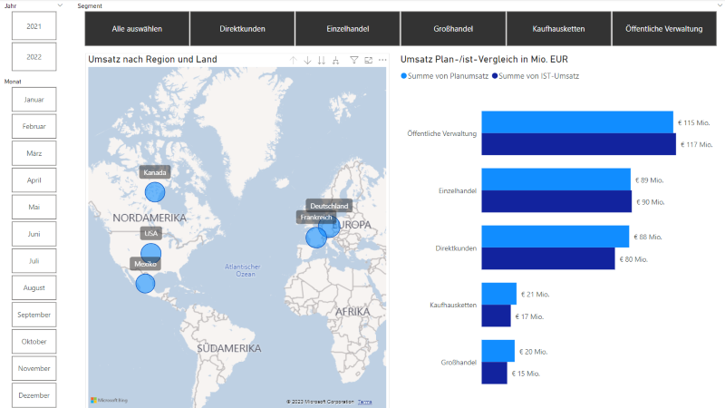

Umsatz Plan-/Istvergleich anhand einer Fallstudie
- Technologie-Stack: Excel, Pivot, PowerBI, PowerQuery & Künstliche Intelligenz
- Github-Repository: Projektlink
Projekteinführung
Im Rahmen eines Projektes an meiner Hochschule hatte ich die Gelegenheit, als studentischer Projektleiter eine umfassende Schulung zu PowerBI zu erstellen und diese als Dozent zu leiten.
Ziel dieses Projekts war die Entwicklung einer Fallstudie und die anschließende Konzeption und Umsetzung eines PowerBI-Dashboards. Die Herausforderung bestand darin, die geplanten Umsätze mit den tatsächlich erzielten Umsätzen einer Geschäftseinheit, die Fahrräder verkauft, detailliert zu analysieren.
Weitere Projektdetails
Dieses Projekt erforderte die Analyse umfangreicher Verkaufsdaten und die Erstellung maßgeschneiderter Umsatzprognosen. Durch die Anwendung von Power Query konnten wir Daten aus verschiedenen Quellen integrieren und transformieren, um aussagekräftige Erkenntnisse zu gewinnen.
Meine Rolle im Projekt
In meiner Funktion als studentischer Projektleiter und Dozent lag meine Hauptverantwortung in der Schulung der Teammitglieder zur effektiven Nutzung von PowerBI und der Leitung des Projekts. Zudem hatte ich die Gestaltung und Entwicklung des PowerBI-Dashboards maßgeblich in meiner Verantwortung.
Datenmodellierung und PowerQuery
Nach dem Import der Daten in PowerQuery wurden diese gründlich transformiert und bereinigt, um sie anschließend in einem Datenmodell zu konsolidieren. Das Datenmodell setzte sich aus verschiedenen Dimensionstabellen und Faktentabellen zusammen, die miteinander in Beziehung gesetzt wurden, um Drilldowns und vertiefte Analysen zu ermöglichen. Hierbei wurde besonderer Wert auf eine starke Normalisierung gelegt, um ausschließlich 1-zu-1-Beziehungen zu erhalten.
Einblicke in das Dashboard
Das entwickelte Dashboard ermöglicht den Vergleich von geplanten Umsätzen mit tatsächlichen Umsätzen in verschiedenen Dimensionen, darunter Produkte, Länder und Segmente. Zur Verdeutlichung von Abweichungen wurden Linien- und Säulendiagramme eingesetzt. Verschiedene Datenschnitte und Drilldown-Möglichkeiten unterstützen zusätzlich bei der umfassenden Analyse.
Ergebnisse und Erfahrungen
Die Implementierung des PowerBI-Dashboards führte zu einer verbesserten Einsicht in die Verkaufsleistung und trug maßgeblich dazu bei, dass das Beispielunternehmen fundierte Geschäftsentscheidungen treffen konnte. Dieses Projekt hat meine Fähigkeiten im Bereich Datenanalyse und Business Intelligence weiterentwickelt.
Einsatz von KI-Funktionen in PowerBI
Im Rahmen der Schulung und bei der Entwicklung des Dashboards wurden auch die KI-Funktionen von PowerBI eingesetzt. Hierzu gehören beispielsweise die Q&A-Funktion, die Analyse wichtiger Einflussfaktoren sowie die Erstellung von Prognosen und Analyseräumen.